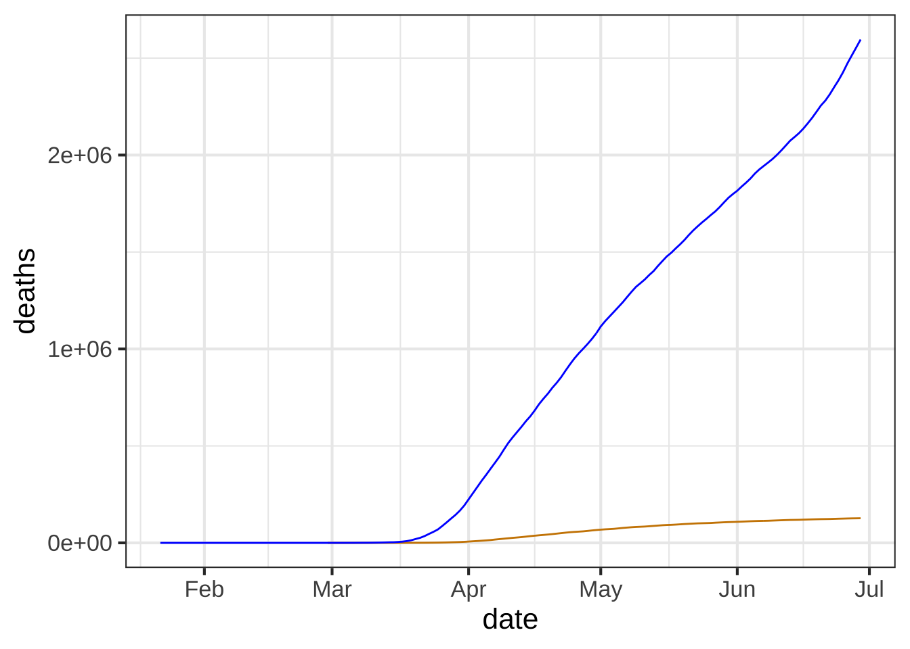
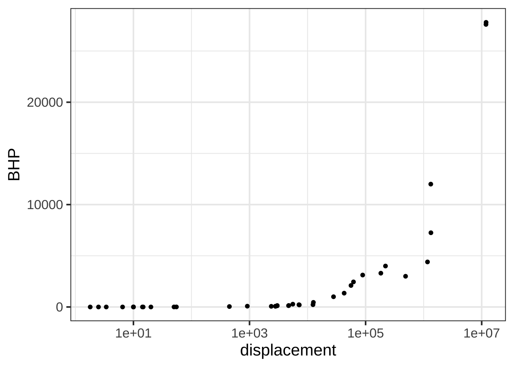
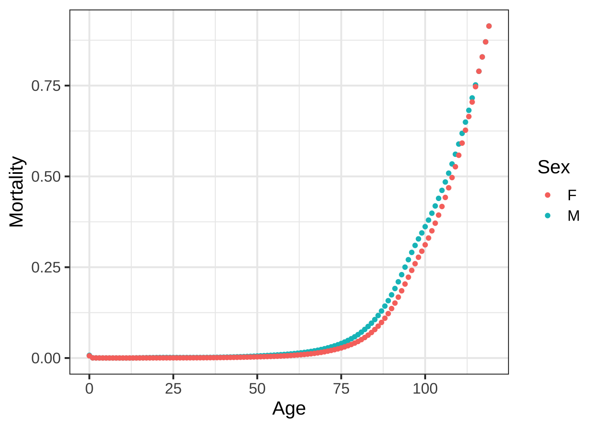

Chapter 8 Process of modeling
Seen very abstractly, a mathematical model, as we are using the term, is a set of functions that represent the relationships between inputs and outputs.
At the most simple level, building a model can be a short process:
- Develop an understanding of the relationship you want to model. Often, part of this “understanding” is the pattern seen in data.
- Choose a function type—e.g. exponential, sinusoidal, sigmoid—that you think would be a good match to the relationship.
- Find parameters that scales your function to be able to accept real-world inputs and generate real-world outputs.
It’s important to distinguish between two basic types of model:
- Empirical models which are rooted in observation and data.
- Mechanistic models such as those created by applying fundamental laws of physics, chemistry, and such.
We are going to put off mechanistic models for a while, for two reasons. First, the “fundamental laws of physics, chemistry, and such” are often expressed with the concepts and methods of calculus. We are heading there, but at this point you don’t yet know the core concepts and methods of calculus. Second, most students don’t make a careful study of the “fundamental laws of physics, chemistry, and such” until after they have studied calculus. So examples of mechanistic models will be a bit hollow at this point.
The process of constructing a model that is a good match for data is called curve fitting, or, more generally, fitting a model.
8.1 Variations from scaling
A good place to start building a model is to pick one of the basic modeling functions. This works surprisingly often. To remind you, here are our seven basic modeling functions:
- straight-line
- exponential
- power-law
- logarithm
- sinusoid
- hump
- sigmoid
It helps in making the selection to have ready to mind the basic shape of each of these function families. To review, revisit Section 3.2.
Remember also that, in general, we scale the inputs and scale the output. This means that in choose a model family, we don’t have to worry at first about the numbers on the axes. (Of course, those numbers will be critically important later on in the process!) The scaling does, however, allow us to consider some variations on the shapes of the modeling functions. In particular, the input scaling lets us flip the shape right-for-left. And the output scaling lets us flip the shape top-for-bottom.
- \(f(t)\), basic shape
- \(f(-t)\), flipped right-for-left
- \(-f(t)\), flipped top-for-bottom
- \(-f(-t)\), flipped both top-for-bottom and right-for-left
For functions such as the sinusoid, flipping is not much use, since the flipped sinusoid curve is still a sinusoid. Similarly, a right-for-left flipped hump function has the same shape as the original. For the straight-line function, flipping of either sort accomplishes the same thing: changing the sign of the slope.
For the exponential function, the two possible types of flipping—right-for-left and top-for-bottom—produce four different curves, all of which are exponential, shown in Figure 8.1.


Figure 8.1: Four variations of the exponential functions.
These three expressions
\[e^{kt}\ \ \ \ \ 10^{t/d} \ \ \ \ \ 2^{t/h}\]
produce the same value if \(k\), \(d\) and \(h\) have corresponding numerical values.
The scaffolding has an expression for plotting out \(2^{t/h}\) for \(-4 \leq t \leq 12\) where \(h = 4\). It also plots out \(e^{kt}\) and \(10^{t/d}\)
fa <- makeFun(2^(t/h) ~ t, h = 4)
fb <- makeFun(10^(t/d) ~ t, d = 10)
fc <- makeFun(exp(k*t) ~ t, k = 0.1)
slice_plot(fa(t) ~ t, domain(t = c(-4, 12))) %>%
slice_plot(fb(t) ~ t, color="blue") %>%
slice_plot(fc(t) ~ t, color = "red") %>%
gf_lims(y = c(0, 8))Your task is to modify the values of d and k such that all three curves lie on top of one another. (Leave h at the value 4.) You can find the appropriate values of d and k to accomplish this by any means you like, say, by using the algebra of exponents or by using trial and error. (Trial and error is a perfectly valid strategy regardless of what your high-school math teachers might have said about “guess and check.” The trick is to make each new guess systematically based on your previous ones and observation of how those previous ones performed.)
After you have found values of k and d that are suited to the task …
Essay question tmp-1: Enter the numerical value of your best estimate of k.
d.
8.2 Curve fitting an exponential function
The exponential function is particularly useful when the quantity we want to model shows constant proportional increase. Many quantities in everyday life are this way. For instance, an increase in salary is typically presented in a format like “a 3% increase.” The population growth of a country is often presented as “percent per year.” Inflation in the price of goods is similarly described in percent per year. Interest on money in a bank savings account is also described as percent per year. But if you have the bad fortune to owe money to a loan shark, the proportional increase might be described as “percent per month” or “percent per week.”
When you know the “percent increase per time” of a quantity whose initial value is \(A\), the exponential function is easy to write down: \[f(t) = A (1+r)^t\] The number \(r\) is often called the interest rate or discount rate and is given in percent.
Regrettably, it’s extremely easy amd common to forget the rules for addition with percent. If \(r = 5\%\), then \((1+r) = 1.05\), not 6. Always keep in mind that \(5\%\) means \(\frac{5}{100}\).
Another source of error stems from the tradition in mathematics of using the number \(e=2.718282\) as the “natural” base of the exponential function, whereas in \(f(t) = A (1+r)^t\) the base is \(1+r\).
You can translate an exponential \(b^t\) in any base \(b\) to the “natural” base. This is just a matter of calculating the appropriate parameter \(k\) such that \(e^k = b\). Using logarithms, \[e^k = b\ \ \implies \ \ k=\ln(b)\] For instance, if \(r=5\%\) per year, we’ll have \(k = \ln(1+r) = \ln(1.05) = 0.488\) per year.
Almost everybody is happier doing arithmetic with numbers like 2 and 10 rather than \(e=2.718282\). For this reason, you may see formulations of the exponential function as \(g(t) \equiv 2^{a t}\) or \(h(t) \equiv 10^{c t}\). Remember that \(2^{a t}\) and \(e^{at}\), although both exponential functions, are quantitatively different. If you want to write \(2^{at}\) using the “natural” base, it will be \(e^{\ln(2) a\, t }\). Similarly, \(10^{ct} = e^{\ln(10) c\, t}\).
Exponential functions also describe decrease or decay. Just replace \(t\) with \(-t\). That is, a movie of a decreasing quantity is just the movie of an increasing quantity played backwards in time!
Figure 8.2 shows some data collected by Prof. Stan Wagon to support his making a detailed mechanistic model of an everyday phenomenon: The cooling of a mug of hot beverage to room temperature. The mug started at room temperature, which was measured at 26 degrees C. At time 0 he poured in boiling water from a kettle and measured the temperature of the water over the next few hours.

Figure 8.2: Stan’s data
Our task is to translate this data into the form of a function that takes time as input and returns temperature as output. Such a model would be useful for, say, filling in the gaps of the data. For instance, we might want to find the temperature of the water immediately after being poured from the kettle into the mug.
Looking at the data, one sees that the temperature decreases along a curve: cooling fast at first and then more slowly. This is the pattern of the flipped right-for-left exponential. (Figure 8.1(B)) We can imagine then that an exponential, \(A e^{kt} + C\) will be a suitable model form for the cooling water.
What remains is to find the parameters \(A\), \(k\), and \(C\). Here is a general process for curve-fitting an exponential. Later, we’ll apply this process specifically to the water-cooling situation.
General process for curve-fitting an exponential
Step 0: Check that the data show an exponential pattern in one of its variations, namely a smooth increase or decrease and leveling out beyond some value of \(t\). If this isn’t true, reconsider whether you should be using an exponential function in the first place.
Step 1 Do the data show exponential growth or exponential decay? If it’s exponential growth, then the flat region in Step 0 will be to the left and \(k\) will be positive. If exponential decay, the flat region will be to the right and \(k\) will be negative.
Notice that the question of “growth or decay” depends only on the sign of the parameter \(k\). You can have an exponentially decaying process that’s increasing. Consider, for instance, the speed of a car as it merges onto a highway from a slow speed on the entrance ramp. The car’s velocity is increasing, but as you approach highway speed the rate of increase gets smaller. That’s exponential decay.
Step 2 Where is the baseline? We’re going to put aside \(k\) for the moment and find the value of the output that is being approached asymptotically, that is, the height of the level zone of the data. This height is the coefficient \(A\) in the linear combination.
Step 3 Once you know the baseline, you’re set to find a numerical value for the parameter \(k\).
- Pick a point in the data far from the baseline. Call the input \(t_1\).
- Scan forward or backward in time to find a point in the data that’s vertically half way from the original point toward the baseline. Call the input at that point \(t_{1/2}\). The difference between these, \(t_1 - t_{1/2}\) is called the half-life or halving-time if it’s negative and the doubling time if it’s positive.
- The parameter \(k\) is \(0.693 / (t_1 - t_{1/2})\). Double check the sign of \(k\) to make sure it’s consistent with what you saw in Step 1. (Incidently, \(0.693 = \ln(2)\). The 2 is the same as the 2 in doubling or halving.)
Step 4 Now that you have numerical values for the baseline \(A\) and the parameter \(k\), calculating the value of \(B\) is straightforward.
i. Pick a \(t_0\) that’s reasonably well represented in your data. Find the vertical coordinate represented by the data near that \(t_0\). Call that \({\cal D}\).
ii. Solve with respect to \(B\) the equation \(A + B e^{k t_0} = {\cal D}\). Things are particularly easy if you can use \(t_0 = 0\). Then you just straight off calculate \(B = {\cal D} - A\).
Step 5 Plot the function \(A + B e^{k t}\) using the values for \(A\), \(B\), and \(t\) that you just found. If you are not satisfied, tweak the parameters a bit until you are.
Exponential curve fitting applied to the water-cooling data
Let’s illustrate the general process on the water-cooling data, redrawn in Figure 8.3.

Figure 8.3: The cooling-water data, repeated here for convenience.
Step 0: The data indicate a smooth curve. As \(t\) gets large, the curve approaches a constant. So an exponential model is reasonable.
Step 1: The flat zone of the data is to the right. So we’ve got exponential decay and \(k < 0\).
Step 2: The curve looks like it’s leveling out at a temperature of about 25 degrees C for large \(t\). So \(A \approx 25^{\circ} \text{C}\).
Step 3:
- The point furthest from the baseline is located at \(t_1 = 15 \text{sec}\) with a value \({\cal D} \approx 80^\circ\text{C}\).
- This if \(55^\circ\text{C}\) from the baseline. We want to find the value of \(t_1\) where the temperature will be half way from 80 to the baseline. That’s a temperature of about \(80 - 55/2 = 53.5\). Scanning over to the right, the function that I can imagine going through the data crossed \(53^\circ\) at about \(t_{1/2} = 40\). Thus, the half-life is estimated at 25s.
- The parameter \(k\) is therefore $k\(0.693 / \mbox{half-life}) = - 0.63 / 25 = -0.0277\). Since we identified in Step 1 that exponential decay is involved, we expect \(k\) to be negative. It is.
Step 4.
- We know \(A \approx 25\) and \(k \approx -0.0277\). We also now that for \(t=15\) the function output is about \({\cal D} = 80^\circ\).
- This means \(25^\circ + B e^{- 0.0277 \times 15} \approx 80^\circ = 25 + 0.66 B\). Solving for \(B\) gives \(B = (80 - 25)/0.66 = 83.3\)
Step 5. Graph the function over the data.

Figure 8.4: An exponential function that roughly aligns with the data.
The Bargain Basement store wants to sell its goods quickly. Consequently, they reduce each product’s price \(P\) by 5% per day.
Question A If a jacket costs $80 today, how much will it cost in \(t\) days?
- \(P = 80 - 5t\) ☹︎ Remember, 5 percent is exactly the same as 0.05
- \(P = 80 - 4t\) ☹︎ Remember, 4 percent is exactly the same as 0.04
- \(P = 80 - 0.05t\) ☹︎ This would be a decrease in price by 5 cents every day.
- \(P = 80 (0.05)^t\) ☹︎ Each day’s price would be only 5% that of the previous day’s price.
- \(P = 80 (0.95)^t\) ✓
You’ll need to open a sandbox for the next question.
You’re on your own here! Remember, to raise a number to a power, you can use an expression like `0.95^7$.
Question B You decided that you like the $80 jacket, but you have a budget of only $60. How long should you wait before coming back to the Bargain Basement store.?
3 days ☹︎ On day 3 the price will be \(0.95 imes 0.95 imes 0.95 imes 80\). That’s above your budget. 4 days ☹︎ On day 4 the price will be \(80 \times 0.95^4\)= $65.16. Too much! 5 days ☹︎ On day 5 the price will be \(80 \times 0.95^5\)= $61.90. Close, but still higher than your budget. 6 days ✓
The Wikipedia entry on “Common Misconceptions” used to contain this item:
Some cooks believe that food items cooked with wine or liquor will be non-alcoholic, because alcohol’s low boiling point causes it to evaporate quickly when heated. However, a study found that some of the alcohol remains: 25% after 1 hour of baking or simmering, and 10% after 2 hours.
The modeler’s go-to function type for events like the evaporation of alcohol is exponential: The amount of alcohol that evaporates would, under constant conditions (e.g. an oven’s heat), be proportional to the amount of alcohol that hasn’t yet evaporated.
Question A A) Assume that 25% of the alcohol remains after 1 hour? If the process were exponential, how much would remain after 2 hours?
10% ☹︎ That’s what the study is reported to have found, but that’s not consistent with an exponential process that decays to 25% after one hour 25% ☹︎ Exponentials decay to zero eventually, so don’t expect things to stay still after one hour. 25% of 25% ✓ We know that 75% is eliminated over 1 hour, leaving 25%. The continuing exponential process will, over the next hour eliminate 75% of the amount at the start of that hour. So after hour 2 we’ll have 25% of the amount we had at hour 1, which was 25% of the original amount. 75% ☹︎ That’s how much was eliminated in the first hour, not how much remains after 2 hours. 75% of 75% ☹︎ In an exponential process, at any moment the rate of decay (e.g. 75% per hour) is a constant proportion of the amount that is still there. After one hour, there is 25% of the alcohol remaining. That will decay at a rate of 75% per hour. Over the next hour, we’ll lose 75% of the original 25%, giving us 25% of the original amount.
Question B B) What is the half-life of an exponential process that decays to 25% after one hour?
- 15 minutes ☹︎ This provides time for four halvings in one hour, which would leave \(\frac{1}{2} \times \frac{1}{2} \times \frac{1}{2} \times \frac{1}{2} = 1/16\) of the original not 1/4.
- 30 minutes ✓ This gives time for two halvings in one hour, bringing us to 25% as observed.
- 45 minutes ☹︎ Two halvings bring us down to 25%. At this rate, it would take 90 minutes to get down to 25%, not 60 minutes as observed.
- none of the above ☹︎
Let’s change pace and think about the “10% after 2 hours” observation. First, recall that the amount left after \(n\) halvings is \(\mbox{amount_left}(n) \equiv \frac{1}{2}^n\) This is an exponential function with base 1/2.
You’re going to carry out a guess-and-check procedure to find a zero of the function \(\text{amount_left}(n) - 0.10\) that is, you’ll find what \(n\) will generate the stated output value (e.g. 10%).
Open a sandbox and copy over the scaffolding, which include the definition of the amount_left() function. and a “guess” for the input. Change the guess until you get the output 10%.
amount_left <- makeFun((1/2)^n ~ n)
amount_left(0)## [1] 1Question C C) Use amount_left() to figure out how many halvings it takes to bring something down to 10% of the original amount.
2.58 ☹︎ 3.32 ✓ 3.62 ☹︎ 3.94 ☹︎ 4.12 ☹︎
Another way to find the input \(n\) that generates an output of 10% is to construct the inverse function to \(\text{amount_left}()\).
The computer already provides you with inverse functions for \(2^n\) and \(e^n\) and \(10^n\). Their names are log2(), log(), and log10() repectively. Using log2(), write a function named log_half() that gives the inverse function to \((1/2)^n\). Remember, the input to the inverse function corresponds to 10%; the output to the \(n\).
log_half <- makeFun( log2(...your stuff here ...) ~ x)Question D The answer you got in part C) is the number of halvings needed to reach 10%. If this number occurs in 2 hours (that is, 120 minutes), what is the half life stated in minutes.
30 ☹︎ 35 ☹︎ 36 ✓ 38 ☹︎ 42 ☹︎ 47 ☹︎
Suppose you compromise between the half-life needed to reach 25% after one hour and the half-life needed to reach 10% after two hours. Use, say, 33 minutes as the compromise half life. Using the sandbox below, calculate how much would be left after 1 hour for this compromise half life, and how much left after 2 hours.
Question E How much is left after 1 hour and after 2 hours when the half life is 33 minutes?
- 28% and 8% ✓
- 31% and 4% ☹︎
- 30% and 9% ☹︎
- 27% and 9% ☹︎
You have likely heard the phrase “exponential growth” used to describe the COVID-19 pandemic. Let’s explore this idea using actual data.
The COVID-19 Data Hub is a collaborative effort of universities, government agencies, and NGOs to provide up-to-date information about the pandemic. We’re going to use the data about the US at the whole-country level. (There’s also data at state and county levels.)
Perhaps the simplest display is to show the number of cumulative cases (the confirmed variable) and deaths as a function of time. You can see the documentation for the dataset at the COVID-19 Data Hub
Open a sandbox and make the plot.
We’re going to plot confirmed cases in blue and deaths in red.
gf_point(confirmed ~ date, data = Covid_US, color = "blue") %>%
gf_point(deaths ~ date, color = "red")
Question A As of mid July, about how many confirmed cases were there? (Note that the labeled tick marks refer to the beginning of the month, so the point labeled Feb is February 1.)
- about 300,000 ☹︎ The number 1e6 means 1,000,000, that is, six zeros following the one.
- about 350,000 ☹︎ The number 1e6 means 1,000,000, that is, six zeros following the one.
- about 400,000 ☹︎ The number 1e6 means 1,000,000, that is, six zeros following the one.
- about 3,000,000 ☹︎ Mid July is the tick mark after the one labelled
Jul.
- about 3,500,000 ✓
- about 4,000,000 ☹︎ Mid July is the tick mark after the one labelled
Jul.
We’re going to do something to make the graph more informative. (At least, more informative if you understand about logarithms and exponentials!)
Here’s the same graphic as above, but taking the logarithm of the number of cases (that is, confirmed) and of the number of deaths. Since we’re taking the logarithm of only the y-variable, this is called a “semi-log” plot.
gf_point(log(confirmed) ~ date, data = Covid_US, color = "blue") %>%
gf_point(log(deaths) ~ date, color = "red") 
Up through the beginning of March in the US, it is thought that most US cases were in people travelling into the US from hot spots such as China and Italy and the US, as opposed to contagion between people within the US. (Such contagion is called “community spread.”) So let’s focus on the data from the start of March onward.
Exponential growth appears as a straight-line pattern on a semi-log plot. Obviously, the overall pattern of the curves is not a straight line. The explanation for this is that the exponential growth rate changes over time, perhaps due to public health measures (like business closing, masks, etc.)
The first (official) US death from Covid-19 was recorded was recorded on Feb. 29, 2020. Five more deaths occurred two days later, bringing the cumulative number to 6.
Question B The red data points for Feb 29/March 1 show up at zero on the vertical scale. The red data point for March 2 is at around 2 on the vertical scale. Is this consistent with the facts stated above?
- No. The data contradict the facts. ☹︎ Think about what it means to be 0 on the vertical scale.
- Yes. The vertical scale is in log units, so 0 corresponds to 1 death, since \(\ln 1 = 0\). ✓
- No. The vertical scale doesn’t mean anything. ☹︎ You can see from the plotting command what the quantity on the vertical axis is:
log(confirmed)for the blue dots andlog(deaths)for the red.
One of the purposes of making a semi-log plot is to enable you to compare very large numbers with very small numbers on the same graph. For instance, in the semi-log plot, you can easily see when the first death occurred, a fact that is invisible in the plot of the raw counts (the first plot in this exercise).
Another feature of semi-log plots is that they preserve proportionality. Look at the plot of raw counts and note that the curve for the number of deaths is much shallower than the curve for the number of (confirmed) cases. Yet on the semi-log plot, the two curves are practically parallel.
On a semi-log plot, the arithmetic difference between the two curves tells you what the proportion is between those curves. The parallel curves mean that the proportion is practically constant. Calculate what the proportion between deaths and cases was in the month of May. Here’s a mathematical hint: \(\ln \frac{a}{b} == \ln a - \ln b\). We are interested in \(\frac{a}{b}\).
Question C What is the proportion of deaths to cases during the month of May?
- about 0.2% ☹︎ Remember, it’s the natural logarithm that’s being plotted, so the inverse function is
exp().
- about 1% ☹︎ This would correspond to a (vertical) difference between the curves of about 4.6 log units. Is it really that big?
- about 2% ☹︎ This would correspond to a (vertical) difference between the curves of about 4 log units. Is it really that big?
- about 6% ✓ Good. You calculated
exp(log(deaths) - log(cases))which gives an answer around 0.06, or 6%.
- about 25% ☹︎ I’m not really sure what could lead you to this answer. You’re making a mistake that I didn’t anticipate.
- more than 50% ☹︎ It’s true that in May log(deaths) is about 12, and log(cases) is about 14, and 12/14 is indeed greater than 50%. But, on a log scale, the proportion relates to the difference between logs, not the ratio.
In many applications, people use semi-log plots to see whether a pattern is exponential or to compare very small and very large numbers. Often, people find it easier if the vertical scale is written in the original units rather than the log units. To accomplish both, the vertical scale can be ruled with raw units spaced logarithmically, like this:
gf_point(confirmed ~ date, data = Covid_US, color = "blue") %>%
gf_point(deaths ~ date, color = "red") %>%
gf_refine(scale_y_log10())## Warning: Transformation introduced infinite values in continuous y-axis
## Warning: Transformation introduced infinite values in continuous y-axis
The labels on the vertical axis show the raw numbers, while the position shows the logarithm of those numbers.
The next question has to do with the meaning of the interval between grid lines on the vertical axis. Note that on the horizontal axis, the spacing between adjacent grid lines is half a month.
Question D What is the numerical spacing (in terms of raw counts) between adjacent grid lines on the vertical axis?
- \(10^1\) ☹︎ If this were true, moving up from the lowest label (
1e+01, that is, 10) the next grid line would be at 20, then 30, then 40.
- \(10^2\) ☹︎ If this were true, moving up from the lowest label (
1e+01) the next grid line would be at 110, then 210, then 310.
- A factor of 10. ✓ Right. Every time you move up by one grid line, the raw number increases ten-fold, so 10, 100, 1000, 10,000, and so on. The phrase
a factor of 10means to multiply by 10, not to add 10.
- A factor of 100. ☹︎ You’re thinking along the right lines, but this is the difference between every second grid line, not adjacent grid lines.
8.3 Curve fitting a periodic function
Figure 8.5 shows the tide level in Providence, Rhode Island, starting at midnight on April 1, 2020 and recorded every minute for four and a half days. (These data were collected by the US National Oceanic and Atmospheric Administration. Link)

Figure 8.5: About four days of tide-level data from Providence, Rhode Island
It’s not too hard to see what’s going on. The tide rises and falls about every 12 hours. The difference between high tide and low tide is a little more than one meter. The tide gauge is calibrated so that a typical reading is 1 meter, although we don’t know what that is respect to. (Certainly not sea level, since then the typical reading would be around zero.)
This simple description tells almost everything needed to construct an A/B model of the tide level using a sinusoid, that is, a function of the form \[A + B \sin(2\pi t/P)\] The procedure is straightforward:
Step 0: Determine whether a sinusoid model is appropriate. As you know, sinusoids oscillate up and down repeatedly with a steady period. That certainly seems the case here. But sinusoids are also steady in the peak and trough values for each cycle. That’s only approximately true in the Providence data. Models inevitably involve approximation. We’ll have to keep an eye on whether the fixed amplitude feature of sinusoids
Step 1: Choose a sensible value to represent the low point repeatedly reached. 0.5 m seems appropriate here, but obviously the exact position of the trough of each cycle varies over the 4.5 day duration of the data. Similarly, the peak is near 1.6 m. Parameter \(A\) is the mean of the peak and trough values: \(\frac{1.6 + 0.5}{2} = 1.05\) m here. Parameter \(B\) is half the difference between the peak and trough values: \(\frac{1.6 - 0.5}{2} = 0.55\). Parameter \(A\) is called the baseline of the sinusoid. Paramter \(B\) is the amplitude. (Note that by convention, the amplitude is always half the high-to-low range of the sinusoid.)
Step 2: Estimate the period \(P\) of the sinusoid. This can be done with a ruler: the horizontal duration of a complete cycle. I like to use the time between peaks, but the time between troughs would work just as well. Another good choice is the time between positive sloping crossings of the baseline. (But be careful. The time between successive baseline crossings, one positive sloping and the other negative, give just half the period.)
On the scale of the above plot, it’s hard to read off the time of the first peak. So, zoom in until it becomes more obvious.


Figure 8.6: Zooming in on the start of the data (left) and on the last part of the data (right).
The left panel in Figure 8.6 shows about 24 hours at the start of the record. The first peak is at about 7 hours, the second at about 18 hours. That indicates that the period is 18 - 7 = 11 hours.
Step 3 Plot out the model over the data. Replacing the symbols \(A\), \(B\), and \(P\) with our estimates, the model is
\[\require{color} {\color{green}\mbox{tide}(t) \equiv 1.05 + 0.55 \sin(2\pi t/11)}\]
Figure 8.7 shows this model in \(\color{green}\mbox{green}\).


Figure 8.7: The sinusoid fails to align with the timing of peaks and troughs.
A person breathes in and out every three seconds. The volume \(V\) of air in the person’s lungs varies between a minimum of \(2\) liters and a maximum of \(4\) liters. Assume time \(t\) is measured in seconds.
Remember that a full cycle of the sine wave \(\sin(x)\) involves \(x\) going from its starting value to that value plus \(2 \pi\).
Question A Which of the following is the most appropriate of these models for \(V(t)\)?
- \(V(t) \equiv 2 + 2 \sin \left( \frac{\pi}{3} t \right)\) ☹︎ This varies between a minimum of 0 and a maximum of 2.
- \(V(t) \equiv 3 + \sin \left( \frac{2\pi}{3} t \right)\) ✓ Good. In this class, we generally write the sine function like \(\sin(2 \pi t/P)\) which means that the overall argument to the sine function will go from 0 to \(2 \pi\) when \(t\) goes from 0 to \(P\).
- \(V(t) \equiv 2 + 2 \sin \left( \frac{2\pi}{3} t \right)\) ☹︎ This varies between a minimum of 0 and a maximum of 2.
- \(V(t) \equiv 3 + \sin \left( \frac{\pi}{3} t \right)\) ☹︎ Right amplitude and baseline: the minimum will be 2 liters and the maximum 4 liters. But the period is wrong. Going from \(t=0\) to \(t=3\) should produce a full cycle of the sine function. But here the argument would go only from 0 to $ 3 = \(\pi\). After 3 seconds, only half a cycle has been completed.
Question B Given a respiratory period of 3 seconds/breath, what is the respiratory frequency in units of breaths/minute?
- 20 breaths/minute ✓ Right. Each breath takes 1/20th of a minute, which is 3 seconds, the period specified in the question.
- 3 breaths/minute ☹︎ If this were true, each breath would take 20 seconds to complete.
- 1/3 breath per minute ☹︎ With breaths completed every three seconds, 1/3 of a breath is completed each second. But the problem asked for breaths per minute.
- 20 seconds per breath ☹︎ The period is in the units of seconds per breath, but the frequency will have units of breaths per second. Frequency is the reciprocal of period (and vice versa).
A respiratory cycle can be divided into two parts: inspiration and expiration. Please do an experiment. Using a clock or watch, breath with a total period of 3 seconds/breath, that is, complete one breath every three seconds. Once you have practiced this and can do it without forcing either phase of breathing, make a rough estimate of what fraction of the cycle is inspiration and what fraction is expiration. (The “correct/incorrect” answers here are right for most people. Your natural respiration might be different.)
Question C Which is true?
- Inspiration lasts longer than expiration ✓
- Expiration lasts longer than inspiration ☹︎ Maybe it is for you, but not for most people. Try breathing in while counting 1-2-3 then exhaling while counting 1-2-3-4-5-6. Likely, that’s not a very natural pattern for you.
- Inspiration and expiration each consume about the same fraction of the complete cycle. ☹︎ People can do this consciously by counting 1-2-3 for inspiration and another 1-2-3 for expiration. This usually feels forced and unnatural.
The graph below shows a recording from a “spirometer,” an instrument for recording respiration. Like many old instruments, the trace from this spirometer is made by a pen at the end of a swinging arm with paper moving steadily beneath it. The arm is not exactly aligned with the horizontal axis. Nonetheless, you should be able to estimate an appropriate amplitude and period for the trace. (dm\(^3\) is cubic-decimeters: a tenth of a meter cubed. This is the same as a liter.)
Question A What are appropriate estimates for the period and amplitude of the respiration trace?
- About \(\pm 1\) liter and 3 seconds. ☹︎ If this were true, over the 120 seconds of the recording you would expect to see 40 cycles of respiration.
- About \(\pm 1\) liter and 5 seconds. ✓
- About \(\pm 1\) liter and 7.5 seconds. ☹︎ If this were true, you would expect to see about 16 cycles of respiration over 120 seconds of recording.
8.4 Curve fitting a power-law function
You have been using power-law functions from early in your math and science education. Some examples:
| Setting | Function formula | exponent |
|---|---|---|
| Circumference of a circle | \(C(r) = 2 \pi r\) | 1 |
| Area of a circle | \(A(r) = \pi r^2\) | 2 |
| Volume of a sphere | \(V(r) = \frac{4}{3} \pi r^3\) | 3 |
| Distance traveled by a falling object | \(d(t) = \frac{1}{2} g t^2\) | 2 |
| Gas pressure versus volume | \(P(V) = \frac{n R T}{V}\) | \(-1\) |
| … perhaps less familiar … | ||
| Distance traveled by a diffusing gas | \(X(t) = D \sqrt{ \strut t}\) | \(1/2\) |
| Animal lifespan (in the wild) versus body mass | $L(M) = a M^{0.25} | 0.25 |
| Blood flow versus body mass | \(F(M) = b M^{0.75}\) | 0.75 |
The reason why power-law functions have their important role in science have to do with the logic of physical quantities such as length, mass, time, area, volume, force, power, and so on. We’ll discuss this at length later in the course and the principles will appear throughout calculus.
As for finding the power law \(f(x) \equiv A x^p\) that provides a good match to data, we’ll need some additional tools to be introduced in Chapter 14.
8.5 Hump and sigmoid functions
Our last two basic modeling functions express an important idea in modeling: localness. To put this in concrete terms, imagine creating a function to depict the elevation above sea level of a long road as a function of distance in miles, \(x\), from the start of the road. If the road were level at 1200 feet elevation, a sensible model would be \(\mbox{elevation}(x) = 1200 \text{ft}\). If the road were gently sloping, a better model would be \(\mbox{elevation}(x) = 1200 + 3 x\).
Now let’s add a bump to the road. A bump is a local feature, often only a few feet wide. Or, perhaps the road is crossing a mountain range. That’s also a local feature, but unlike a bump in the road a mountain range extends for many miles.
The basic modeling function suited to represent bumps in the road, or potholes, or mountain ranges is called a hump function.
A hump function has two parameters: the location of the hump, which we’ll call the center parameter, and the sideways extent of the hump, which we’ll call the spread. Figure ?? shows a few hump functions with different parameters.


It’s easy to read off the center parameter from a graph of a hump. It’s the location of the top of the hump. (We mentioned before that a mathematical word for “the location of the top” is argmax; the value for the input of the function that produces the maximum output.)
The spread parameter is also pretty straightforward, but you first have to become familiar with an unusual feature of the hump function. The output of the hump function far from the center is practically zero. But it is not exactly zero. You can see from the graphs that the hump function has long flanks which approach zero output more or less in the manner of an exponential function. This means that we can’t measure the spread of the hump function by the distance between the zeros on either side of the peak. Instead, we need a convention that will allow us to be precise in quantifying what is admittedly a vague concept of width.
A simple convention is that the spread is the “half-width at half-height.” Come down half-way from the peak of the hump. Panel (c) of Figure ?? marks that elevation with a thin, red, horizontal line. Along that line, measure the width of the hump, as marked by the thick red line in Panel (c). The spread parameter is half the width of the hump measured in this way.
If you have a keen eye, you’ll notice that the red line is not exactly half-way down from the peak. It’s down 39.35% from the peak. The official definition of width of a hump is not actually half-width at half-height, but that simple formulation will do for us for the present.
Another seeming oddity about the hump function is the value of the maximum. It would have seemed natural to define this as 1, so-called “unit height.” The way it actually works is different: the maximum height is set so that the area under the hump function is 1.
This business with the area will make more sense when you’ve learned some calculus tools, specifically “differentation” and “integration.” For now though …
Consider another road feature, a local change from one elevation to another as you might accomplish with a ramp. The basic modeling function corresponding to a local change from one level to another is the sigmoid function. Figure ?? shows three sigmoid functions.


 The name “sigmoid” comes from vague resemblance of the graph to the letter S (which is “sigma” in Greek: ς).
The name “sigmoid” comes from vague resemblance of the graph to the letter S (which is “sigma” in Greek: ς).
The parameters of the sigmoid function are the same as for the hump function: center and width. The center is easy to estimate from a graph. It’s the value of the input that produces an output of 0.5, half-way between the max and min of the sigmoid. As with the hump function, the width is measured according to a convention. The width is the change in input needed to go from an output of 0.5 to an output of 0.8413. This use of 0.8413 must seem loony at first exposure, but there is a reason. We’ll need more calculus tools before it can make sense.
Hump functions and sigmoid functions with the same center and width parameters have a very close relationship. The slope of the sigmoid function is the corresponding hump function. Figures ?? and ?? show corresponding hump and sigmoid functions. To the very far left, the sigmoid function is effectively flat: a slope near zero. Moving toward the center the sigmoid has a gentle slope: a low number. In the center, the sigmoid is steepest: a higher number. Then the slope of the sigmoid becomes gentle again before gradually falling off to zero. Near zero, then low, then higher, then low again, then falling off to zero: that’s also the description of a hump function!
In R, the name of the sigmoid function is pnorm(). The hump is dnorm(). The parameters that specify center and spread are named mean and sd. The word “mean” accurately conveys the idea of “center.” It would be nice to be able to say that sd comes from spread, but in fact sd is short for standard deviation, a old-fashioned term familiar to students of statistics.
“Standard deviation” is off-putting to many people and it really should be replaced with something less weird, perhaps typical spread. The “standard” can be interpreted as “widely used convention.” What about “deviation?” The hump function first appeared two-hundred years ago as part of a theory of measurement error. In the context of “error,” “deviation” might have made sense. But the theory of measurement error long ago became a more general theory of variation. Errors are just one source of variation.
The hump function that we mainly use in CalcZ is implemented in R with dnorm(x, mean, sd). The input called mean corresponds to the center of the hump. The input called sd gives the width of the hump.
In a sandbox, make a slice plot of dnorm(x, mean=0, sd=1). By varying the value of width, figure out how you could read that value directly from the graph.
slice_plot(dnorm(x, mean=0, sd=1) ~ x,
domain(x = c(-4, 4)))In the plot below, one of the double-headed arrows represents the width parameter. The others are misleading.

Question A Which arrow shows correctly the width parameter of the hump function in the graph with arrows?
top ✓ middle ☹︎ bottom ☹︎ none of them ☹︎
Question B What is the value of center in the graph with arrows?
center parameter is the argmax of the function. -1 ☹︎ The center parameter is the argmax of the function. -0.5 ☹︎ The center parameter is the argmax of the function. 0 ☹︎ The center parameter is the argmax of the function. 0.5 ✓ 1 ☹︎ The center parameter is the argmax of the function. 2 ☹︎ The center parameter is the argmax of the function.
Hump functions and sigmoidal functions come in pairs. For every possible sigmoid, there is a corresponding hump that gives, for each value of the input, the slope of the sigmoid.
Each of the following graphs shows a sigmoid and a hump function. The two might or might not correspond to one another. That is, the output of the hump might be the slope of the sigmoid, or the hump might correspond to some other sigmoid. Remember, you’re comparing the output of the hump to the slope of the sigmoid.
For each graph, say whether the hump and the sigmoid correspond to one another. If not, choose one of the reasons why not.

Question A Graph (A)
- The hump and sigmoid correspond. ✓
- The peak of the hump does not occur at the same value of \(x\) at which the sigmoid is steepest. ☹︎ For what \(x\) is the sigmoid the steepest? For what \(x\) is the hump the highest?
- The numerical value of the output of the hump function is, for all \(x\), much larger than the numerical value of the slope of the sigmoid. ☹︎ Did you calculate the numerical value of the slope of the sigmoid?

Question B Graph (B)
- The hump and sigmoid correspond. ☹︎
- The peak of the hump does not occur at the same value of \(x\) at which the sigmoid is steepest. ✓ The hump peaks at about \(x=2\) while the steepest part of the sigmoid is at about \(x=4\)
- The numerical value of the output of the hump function is much larger than the numerical value of the slope of the sigmoid. ☹︎ Did you calculate the numerical value of the slope of the sigmoid?

Question C Graph (C)
- The hump and sigmoid correspond. ✓
- The peak of the hump does not occur at the same value of \(x\) at which the sigmoid is steepest. ☹︎ For what \(x\) is the sigmoid the steepest? For what \(x\) is the hump the highest?
- The numerical value of the output of the hump function is, for all \(x\), much larger than the numerical value of the slope of the sigmoid. ☹︎ Did you calculate the numerical value of the slope of the sigmoid?
In the graph D, there are several hump functions shown, only one of which corresponds to the sigmoid.

Question D Which hump corresponds to the sigmoid?
A ☹︎ The value of the hump output is much larger than the slope of the sigmoid. B ✓ Right! The hump is centered on the steepest part of the sigmoid and falls to zero where the sigmoid levels out. C ☹︎ The hump is too narrow. D ☹︎ The hump is too broad and shifted to the left.Have in mind a hump function and a sigmoid function that form a corresponding pair.

Question A Which of these stories is consistent with the relationship between a hump and its corresponding sigmoid?
- The hump is the amount of water in a bathtub while the sigmoid is the time you spend in the bath. ☹︎
- The hump is the amount of water in the bathtub while the sigmoid is the rate at which water flows from the tap. ☹︎ You turn the tap on and off after a while. That’s not what the sigmoid looks like.
- The hump is the rate at which water flows from the tap and the sigmoid is the amount of water in the bathtub. ✓
- The hump indicates the amount the drain is open and the sigmoid is the amount of water in the bathtub. ☹︎ Shouldn’t the amount of water go down when the drain is open?
A data frame named EbolaSierraLeone11 records the cumulative number of Ebola cases in Sierra Leone from May 1, 2014 to December 16, 2015.
Let’s find how well a sigmoidal function models the data.
gf_point(Cases ~ Day, data = MMAC::EbolaSierraLeone)
It’s straightforward to estimate the values of the parameters from data that have a sigmoidal form. To walk you through the process, the next plot shows simulated data from a genuine sigmoid function.

Sketch in a S-shaped curve that smoothly follows the data.
Find the top plateau of the S-curve. This is indicated by the red line in the graph above. The parameter
Ais simply the height of the plateau, in this case \(y \approx 15\).Come down half way from the plateau. Here, that’s 15/2 or 7.5, indicated by the horizontal blue line segment. Find the inverse of the S-curve from that half-way point onto the horizontal-axis. Here, that gives \(t \approx 5\). The parameter
centeris that value.From the center of the S-shaped curve, follow the curve upward about 2/3 of the way to the plateau. In the diagram, that point is marked with a green line at \(t \approx 7\). The
widthis the distance along the horizontal axis from the blue centerline to the green line. Here, that’s \(7 - 5\) giving 2 as thewidth.You might also want to trace the S-curve downward from the centerline about 2/3 of the way to zero. That’s indicated by the left green line. In the standard sigmoid, the two green lines will be equally spaced around the centerline. Of course the data may not be in the shape of the standard sigmoid, so you might find the two green lines are not equally spaced from the center.
Put aside for the moment that the Ebola data doesn’t look exactly like the standard sigmoid function. Follow the above procedure, nevertheless.
Question A Where is the top plateau?
- About Day 600. ☹︎ Measure the height of the plateau, not where it starts horizontally.
- About 14,000 cases ✓
- About 20,000 cases ☹︎ Read the vertical axis markings more carefully.
- None of the above ☹︎ One of the above answers is pretty good.
Question B Where is the centerline?
- Near Day 200 ✓
- Near Day 300 ☹︎ That’s the center of the vertical scale, not the day at which the curve reaches half-way to the eventual plateau.
- At about 7000 cases ☹︎ That’s half-way up to the plateau, but the answer you want is the day at which the curve reaches that point.
Question C Now to find the width parameter. The curve looks more classically sigmoidal to the left of the centerline than to the right, so follow the curve downward as in Step 4 of the algorithm to find the parameters. What’s a good estimate for width?
- About 50 days ✓
- About 100 days ☹︎ Too wide!
- About 10 days ☹︎ Too small
- About 2500 cases ☹︎ The width is measured along the horizontal axis, not the vertical
Open a sandbox and use the following commands to plot the Ebola data along with the sigmoid that you matched to the data by eye. The commands also generate and plot a more “refined” estimate found with fitModel() starting with your by-eye parameters. (Note: You’ll need to fill in the blanks at the start of the scaffolding with your by-eye parameters before running the code.)
A_estimate <- _____
center_estimate <- _____
width_estimate <- ______
guessed_fun <- makeFun(A* pnorm(Day, center, width) ~ Day,
A = A_estimate,
center = center_estimate,
width = width_estimate)
refined_fun <- fitModel(Cases ~ A * pnorm(Day, center, width),
data = EbolaSierraLeone,
start = list(A=A_estimate,
center=center_estimate,
width=width_estimate))
gf_point(Cases ~ Day, data = MMAC::EbolaSierraLeone) %>%
slice_plot(guessed_fun(Day) ~ Day, color="red") %>%
slice_plot(refined_fun(Day) ~ Day, color="blue")I can’t predict what you see in your graph, since it depends on what starting estimates you used for A, center and width.
Essay question tmp-3: Write down the estimates you made by eye for A, center and width. Then explain in words any major systematic deviations of the ‘refined’ model from the data.
This idea of fitting a sigmoidal curve globally to data that are only roughly sigmoidal might be forgiven since it’s just a textbook exercise. But if this were a real-world problem, there are three rookie mistakes in the approach, despite its technical sophistication.
- A model is built for a purpose. There’s no statement in the exercise about what the purpose is.
- The data themselves are a good enough representation of the historical pattern. There’s no need to adorn them with a fitted curve.
- The mathematical processes that would justify the expectation that a sigmoid curve could be useful are based on the idea that the underlying mechanism for the phenomenon is unchanging. For an epidemic, that mechanism is contagion. By saying the “mechanism is unchanging,” we mean that person-to-person transmission of the Ebola virus happens in the same way at the beginning of the epidemic as it does in the middle and in the end. But strong public health interventions were introduced to control the epidemic. That’s a change in mechanism.
8.6 The modeling cycle
Effective modelers treat models with skepticism. They look for ways in which models failure to capture salient features of the real world. They have an eye out for deviations between what their models show and what they believe they know about the system being modeled. They consider ways in which the models might not serve the purpose for which they were developed.
When modelers spot a failure or deviation or lack of proper utility, they might discard the model but more often they make a series of small adjustments, tuning up the model until is successfully serves the purposes for which it is intended.
Thus, modeling is a cyclic process of creating a model, assessing the model, and revising the model. The process comes to a sort of preliminary end when the model serves its purposes. But even then, models are often revised to check whether the results are sensitive to some factor that was not included or to check whether some component that was deemed essential really is so.
8.6.1 Example: Cooling water
Looking back on the exponential fitted to the cooling water data in Section 8.2, it looks like our original estimate of the half-life is a bit too small; the data doesn’t seem to decay at the rate implied by \(k = -0.0277\). Perhaps we should try a somewhat slower decay, say \(k = -0.2\) and see if that improves things.
In the cooling water example, we’re using only a subset of the data collected by Prof. Wagon. The next commands re-create that subset so that you can work with it. They also plot the data and an exponential model.
# reconstruct the sample
set.seed(101)
Stans_data <- CoolingWater %>% sample_n(20)
# Plot the sample and overlay a model
gf_point(temp ~ time, data=Stans_data) %>%
gf_lims(y = c(20, NA)) %>%
slice_plot(25 + 83.3*exp(-.0277*time) ~ time, color="blue")
See if \(k=-0.02\) provides a better fit to the model. (You can add another slice_plot() to be able to compare the original and \(k=-0.02\) models.)
Later in CalcZ, we’ll study optimization. There are optimization techniques for directing the computer to refine the parameters to best match the data. Just to illustrate, here’s what we get:
refined_params <-
fitModel(temp ~ A + B*exp(k*time), data = Stans_data,
start = list(A = 25, B = 83.3, k = -0.0277))
coef(refined_params)## A B k
## 25.92628463 60.69255269 -0.01892572new_f <- makeFun(refined_params)
gf_point(temp ~ time, data = Stans_data) %>%
slice_plot(new_f(time) ~ time, color="blue")
Figure 8.8: Polishing the fit using the rough model as a starting point.
The refined parameters give a much better fit to the data than our original rough estimates by eye.
We had two rounds of the modeling cycle. First, choice of an A/B expontential model and a rough estimate of the parameters A, B, and \(k\). Second, refinement of those parameters using the computer.
Looking at the results of the second round, the experienced modeler can see some disturbing discrepancies. First, the estimated baseline appears to be too high. Related, the initial decay of the model function doesn’t seem to be fast enough and the decay of the model function for large \(t\) appears to be too slow. Prof. Stan Wagon noticed this. He used additional data to fill in the gaps for small \(t\) and refined his model further by changing the basis functions in the linear combination. He hypothesized that there are at least two different cooling processes. First, the newly poured water raises the temperature of the mug itself. Since the water and mug are in direct contact, this is a fast process. Then, the complete water/mug unit comes slowly into equilibrium with the room temperature.
The newly refined model was a even better match to the data. But nothing’s perfect and Prof. Wagon saw an opportunity for additional refinement based on the idea that there is a third physical mechanism of cooling: evaporation from the surface of the hot water. Prof. Wagon’s additional circuits of the modeling cycle were appropriate to his purpose, which was to develop a detailed understanding of the process of cooling. For other purposes, such as demonstrating the appropriateness of an exponential process or interpolating between the data points, earlier cycles might have sufficed.
Here’s a graph of the model Prof. Wagon constructed to match the data.

Figure 8.9: A model that combines three exponentials provides an excellent fit.
This is an excellent match to the data. But … matching the data isn’t always the only goal of modeling. Prof. Wagon wanted to make sure the model was physically plausible. And looking at the refined parameters, which include two exponential processes with parameters \(k_1\) and \(k_2\), he saw something wrong:
But what can we make of \(k_1\), whose [positive value] violates the laws of thermodynamics by suggesting that the water gets hotter by virtue of its presence in the cool air? The most likely problem is that our simple model (the proportionality assumption) is not adequate near the boiling point. There are many complicated factors that affect heat transportation, such as air movement, boundary layer dissipation, and diffusion, and our use of a single linear relationship appears to be inadequate. In the next section [of our paper] we suggest some further experiments, but we also hope that our experiments might inspire readers to come up with a better mathematical model.
The modeling cycle can go round and round!
8.6.2 Example: The tides
Step 4: Evaluate and refine. The green model would make poor predictions. The model says “high tide” when the data say otherwise. What’s missing is the phase of the sinusoid. A model that incorporates the phase is
\[{\color{blue}\mbox{tide}(t) \equiv 1.05 + 0.55 \sin(2\pi (t - t_0)/11)}\]
The new parameter, \(t_0\), should be set to be the time of a positive-going crossing of the baseline. There’s such a crossing at about time = 17. Happily, changing the phase does not itself necessitate re-estimating the other parameters: baseline, amplitude, period. This model, incorporating the phase, has been graphed in \(\color{blue}\mbox{blue}\).

Figure 8.10: Shifting the phase of the sinusoid gives the flexibility needed to align the peaks and troughs of the model with the data. Performing this alignment for one peak makes it clear that the period is wrong.
For some modeling purposes, such as prediction of future tides, the phase information is impossible. For others, say, description of the amplitude of the tides, not. But getting the phase roughly right can help point out other problems. For instance, having the blue sinusoid for comparison makes it clear that the estimated period of 11 hours is too short. Maybe 13 hours would be better. Better still, since at \(t=t_0 = 17\) the model is a close match to the data, let’s use that as the estimate of the start of a cycle. But then, let’s move much further along in the data to find another baseline crossing. To judge from the right panel, there is a baseline crossing at \(t=103\). The difference between these two times is \(103 - 17 = 86\) hours. Of course, the period is not 86 hours. Looking back at the whole set of data we can see 7 complete cycles between \(t=17\) and \(t=103\). So our new estimate of the period is \(86/7 = 12.3\) hours.
With this refinement the model is \[{\color{violet}\mbox{tide}(t) \equiv 1.05 + 0.55 \sin(2\pi (t - 17)/12.3)}\]
Figure 8.11: With the phase about right, a better estimate can be made of the period: 12.3 hours.
That’s a pretty good match to the data! We might call it quits at that. First, let’s polish up the parameter estimates, letting the computer do the tedious work of trying little tweaks to see if it can improve the fit.
tide_mod <-
fitModel(level ~ A + B*sin(2*pi*(hour-hzero)/P),
data = RI_tide,
start=list(A=1.05, B=0.55, hzero=17, P=12.3))
coef(tide_mod)## A B hzero P
## 1.0220540 0.4998367 15.3899905 12.5593556
Figure 8.12: Polishing the parameters of the sinusoid
This last model seems capable of making reasonable predictions, so if we collected up-to-date data we might be able to fit a new model to predict the tide level pretty accurately a few days ahead of time. Also, the excellent alignment of the model peaks with the data tell us that the cyclic tide has a period that constant, at least so far as well can tell.
With the period estimate \(P=12.56\) hours, we can go looking for other phenomena that might account for the tides. The period of the day-night cycle is, of course 24 hours. So the tides in Providence come in and out twice a day. But not exactly. Something else must be going on.
Isaac Newton was the first to propose that the tides were caused by the gravitational attraction of the Moon. A complete cycle of the Moon—moon rise to moon rise—takes about 50 minutes longer than a full day: the Earth revolves once every 24 hours, but in that time the Moon has moved a bit further on in its orbit of the Earth. So the Moon’s period, seen from a fixed place on Earth is about 24.8 hours. Half of this, 12.4 hours, is awfully close to our estimate of the tidal period: 12.56 hours. The difference in periods, 8 minutes a day, might be hard to observe over only 4 days. Maybe with more data we’d get a better match between the tides and the moon.
This is the modeling cycle at work: Propose a model form (A/B model with sinusoid), adjust parameters to match what we know (the Providence tide record), compare the model to the data, observe discrepancies, propose a refined model. You can stop the model when it is giving you what you need. The period 12.56 hour model seems good enough to make a prediction of the tide level a few days ahead, and is certainly better than the “two tides a day” model. But our model is not yet able to implicate precisely the Moon’s orbit in in tidal oscillations.
Discrepancies between a model and data play two roles: they help us decide if the model is fit for the purpose we have in mind and they can point the way to improved models. That the tidal data deviates from the steady amplitude of our model can be a clue for where to look next. It’s not always obvious where this will lead.
Historically, careful analysis of tides led to a highly detailed, highly accurate model: a linear combination of sinusoids with diurnal periods 12.42, 12.00, 12.66, and 11.97 hours as well components with period 23.93, 25.82, 24.07, 26.87, and 24.00 hours. A tide-prediction model is constructed by finding the coefficients of the linear combination; these differ from locale to locale.
The data frame SunsetLA records the number of minutes after 4 pm until the sun sets in Los Angeles, CA over a 4-year interval from January 2010 (month 1) through December 2013 (month 48).
Open a sandbox and make a plot of sunset time versus month.
gf_point(Minutes ~ Month, data = SunsetLA) %>%
gf_line()
We’re using both gf_point() and gf_line(). With data that oscillates up and down, connecting the data points with lines makes it easier to see the pattern.
Question A What is the range of the number of minutes until sunset over the whole 4-year period?
- 40 to 190 minutes ✓
- 120 minutes ☹︎ A range is an interval spanned by two numbers.
- 40 to 180 minutes ☹︎ The largest values are half a tick mark up from 180. Tick marks are spaced by 20 minutes.
- 0 to 48 months ☹︎ That’s the domain. The range is along the vertical axis.
Question B The data fall nicely on a sine-shaped curve. What is the period of that sine?
6 months ☹︎ Look at the number of months from one peak to another. 11 months ☹︎ Look more carefully. And remember that the change in length of day is an annual phenomenon. 12 months ✓ 12 minutes ☹︎ Period refers to an interval on the domain of the function, not the range.
The function \[\mbox{sunset}(\mbox{Month}) \equiv A \sin(2 \pi\, \mbox{Month} / 12) + C\] is a linear combination of two functions:
- The constant function
one(Month) - The sine function
sin(2*pi*Month/12)
The two functions are scaled by \(C\) and \(A\), respectively.
You can estimate \(C\) by the mid-point of the range (in minutes) of the data. You can estimate \(A\) as half the length of the range (that is, half the max minus the min.)
Make rough but reasonable numeric estimates for \(C\) and \(A\) from the data. Then, in the sandbox, define the sunset() function using the numerical estimates in the linear combination. Plot your function as a layer on top of the data. (Pipe the gf_point() layer to slice_plot().)
sunset <- makeFun(A + C*sin(2*pi*(Month - offset)/12),
A = __your estimate__,
C = __your estimate__,
offset=0)
gf_point(Minutes ~ Month, data = SunsetLA) %>%
gf_line() %>%
slice_plot(sunset(Month) ~ Month)The domain for slice_plot() is inherited to that implied by the SunsetLA data. Notice that the input name in slice_plot() corresponds to that established in gf_point().
Question C Your sunset() function should be a pretty good match to the data except for one thing. What is that thing?
- The
sunset()function has a completely different range than the data. ☹︎ This won’t be the case if you have estimated \(C\) and \(A\) correctly.
- The period of the
sunset()function doesn’t match the data. ☹︎ Did you usesin(2*pi*Month/12)? If so, the period should be right.
- There is a horizontal time shift between
sunset()and the data. ✓
We’re going to fix the problem with sunset() by defining a time offset to use as a reference. For a sine function, a suitable time offset is the value along the horizontal axis when the phenomenon being modeled crosses \(C\) with a positive slope. There are 4 such points along the horizontal axis readily identifiable in the data. (They may not be at an integer value of Month.)
Question D Which of these is a suitable value for the time offset?
0 months ☹︎ That’s not a time when the data suggest that \(C\) is being crossed. 19 months ☹︎ That’s a maximum, not a crossing of \(C\). 21.5 months ☹︎ That’s a crossing of \(C\), but not one with a positive slope. 15.5 months ✓ This is a good rough value. Since the period is 12 months, you could equally well have said the offset is 3.5 months.
In the original scaffolding, the value of offset was zero. Change that to match your answer to the previous question.
Plot out the modified sunset() function and confirm that it is a much better match to the data than the original (that is, the one without the time offset). You can “tune” your function by tweaking the numerical values of the \(A\), \(C\), and \(offset\) parameters until you get a solid match.
Alternatively, you can use fitModel() to do the tuning for you. Plug in your estimates (a.k.a. “guesses”) for the parameters in place of the ___ in the following. Then run the code. You’ll see your estimate of the function compared to the result of having the computer refine your estimate. Chances are, the computer does a better job of stringing the function through the data.
## rough estimates from graph
rough_A <- __estimated_A__
rough_C <- __estimated_C__
rough_offset <- __estimated_offset___
guessed_fun <-
makeFun(A*sin(2*pi*(Month - offset)/12) + C ~ Month,
A = rough_A, C = rough_D,
offset = rough_offset)
tuned_fun <-
fitModel(Minutes ~ A*sin(2*pi*(Month - offset)/12) + C,
data = SunsetLA,
start = list(A = rough_A,
C = rough_C,
offset = rough_offset) )
gf_point(Minutes ~ Month, data = SunsetLA) %>%
gf_line(color = "blue") %>%
slice_plot(tuned_fun(Month) ~ Month) %>%
slice_plot(guessed_fun(Month) ~ Month, color = "red")Perhaps you were expecting the tuned sine function to match the data exactly. It does not. One reason for this is that the Earth’s orbit around the Sun is not exactly circular. The sine function is only a model of the phenomenon, good for some purposes and not for others. For a more complete explanation, see this article on Wikipedia.
(Thomas Swalm contributed to this exercise.)From the
{MMAC}R package↩︎